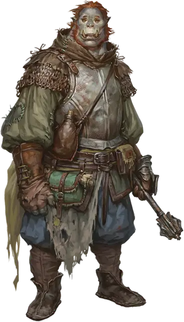

Пустотелый Мрачной Клики
Bleak Cabal Void Soother
Маленький или Средний Гуманоид

Класс Доспеха 16 (кираса)
Хиты 55 (10к8 + 10)
Скорость 30 футов
| мод | спас | ||
|---|---|---|---|
| СИЛ | 16 | +3 | +3 |
| ЛОВ | 14 | +2 | +2 |
| ТЕЛ | 12 | +1 | +3 |
| мод | спас | ||
|---|---|---|---|
| ИНТ | 12 | +1 | +1 |
| МДР | 15 | +2 | +4 |
| ХАР | 10 | +0 | +0 |
Навыки Медицина +4
Чувства пассивное Восприятие 12
Языки Общий плюс один язык
Опасность 3 (700 опыта)
Бонус мастерства +2
Действия
Мультиатака. Пустотелый совершает две атаки Булавой или Снарядом пустоты.
Булава. . Рукопашная атака оружием: +5 к попаданию, досягаемость 5 футов, одна цель. Попадание: 6 (1к6 + 3) дробящего урона плюс 3 (1к6) урона силовым полем.
Снаряд пустоты. . Дальнобойная атака заклинанием: +5 к попаданию, дистанция 90 футов, одна цель. Попадание: 9 (2к8) урона силовым полем.
Использование заклинаний. Пустотелый накладывает одно из следующих заклинаний, не нуждаясь в материальных компонентах, используя Мудрость в качестве базовой характеристики (Сл спасброска заклинания 12):
• Неограниченно: указание [guidance], свет [light]
• 1/день каждое: умиротворение [calm emotions], малое восстановление [lesser restoration], снятие проклятия [remove curse], защита от энергии [protection from energy]
Бонусные действия
Успокаивающее слово (3/день). Пустотелый произносит волшебное слово сострадания, исцеляя одно существо, которое он может видеть в пределах 60 футов. Цель восстанавливает 4 (1к4 + 2) хита.
Описание
Пустотелые заботится о существах, пораженных проклятиями и негативным воздействием планов. Эти воины отправляются в опасные регионы, раздираемые конфликтами, чтобы оказывать помощь тем, кого они там находят.